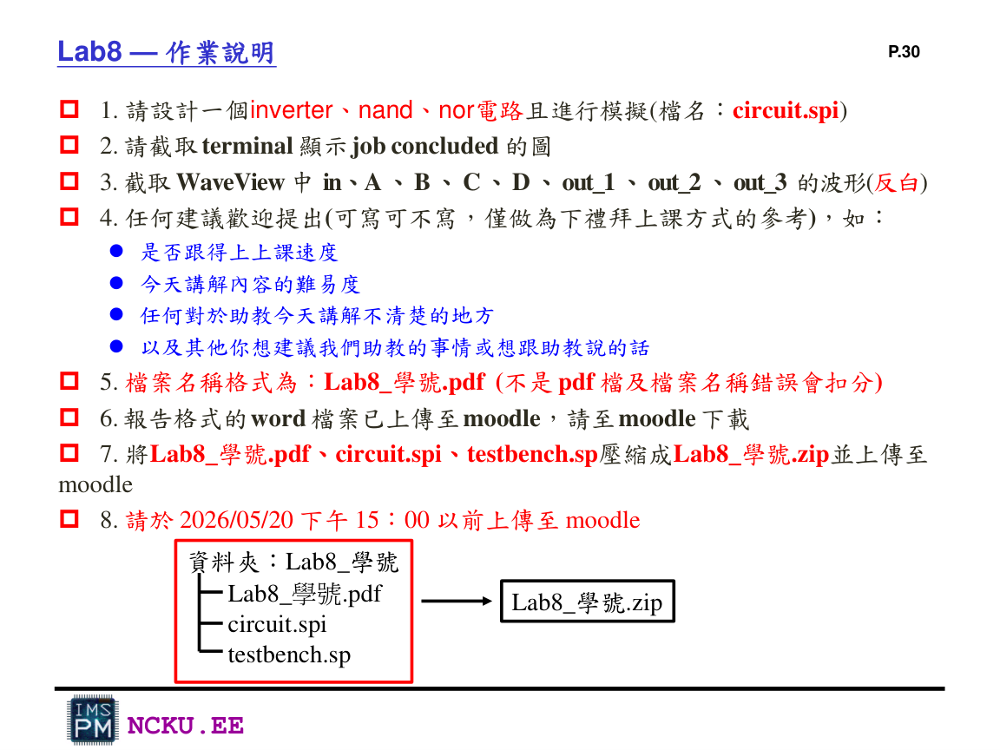

報告格式與繳交
最後要把截圖放入 Word 格式檔，匯出 PDF，並與 SPICE 檔一起壓縮。
報告內容
- 學號、姓名
- Inverter 電路設計
- Inverter terminal job concluded 截圖
- WaveView 中 in 與 out_1 波形
- NAND 電路設計
- NAND terminal job concluded 截圖
- WaveView 中 A、B、out_2 波形
- NOR 電路設計
- NOR terminal job concluded 截圖
- WaveView 中 C、D、out_3 波形
- 結論/建議

Lab8 講義的繳交要求與資料夾格式。
檔名與資料夾
Lab8_學號/
├── Lab8_學號.pdf
├── circuit.spi
└── testbench.sp
壓縮成：Lab8_學號.zip注意：PDF 檔名錯誤或不是 PDF 會扣分。ZIP 裡也要放 circuit.spi 與 testbench.sp。
報告截圖品質建議
Terminal
截圖要看得到 hspice 指令與 job concluded。
WaveView
建議白底、線寬加粗，訊號名稱與時間軸要清楚。
電路圖/程式碼
可以貼 CMOS 結構圖或 circuit.spi 重要片段，說明 MOS 尺寸。